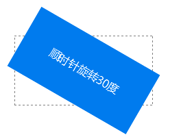

语法：
transform:rotate(度数)
说明：
rotate()将元素相对中心原点进行旋转。这里的旋转是二维的。
度数指的是元素相对中心原点进行旋转的度数，单位为deg。
如果度数为正，则表示元素相对原点中心顺时针旋转；如果度数为负，则表示元素相对原点中心进行逆时针旋转
3D旋转将下面给个例子介绍
使用方法：
transform:rotate(30deg);; /*顺时针旋转30度*/
兼容性：
- 浅绿 = 支持
- 红色 = 不支持
- 粉色 = 部分支持
| 支持版本\类型 | IE | Firefox | Safari | Chrome | Opera |
|---|---|---|---|---|---|
| 版本 | 6-8 | 4-18 | 5.1.7 | 13-23 | 11.5-12.5 |
| 版本 | 9-10 |
ie9 以上，和高版本浏览器。不过transform都要加上对应的前缀，-o,-moz,-webkit,-ms
Internet Explorer 10、Firefox、Opera 支持 transform 属性。
Internet Explorer 9 支持替代的 -ms-transform 属性（仅适用于 2D 转换）。
Safari 和 Chrome 支持替代的 -webkit-transform 属性（3D 和 2D 转换）。
Opera 只支持 2D 转换。
Internet Explorer 10 和 Firefox 支持 3D 转换。
事例：
顺时针旋转
div{
width:200px;
height:100px;
line-height:100px;
color:white;
background-color: #007BEE;
text-align:center;
transform:rotate(30deg);
-webkit-transform:rotate(30deg); /*兼容-webkit-引擎浏览器*/
-moz-transform:rotate(30deg); /*兼容-moz-引擎浏览器*/
}

逆时针旋转
div{
width:200px;
height:100px;
line-height:100px;
color:white;
background-color: #007BEE;
text-align:center;
transform:rotate(-30deg);
-webkit-transform:rotate(-30deg); /*兼容-webkit-引擎浏览器*/
-moz-transform:rotate(-30deg); /*兼容-moz-引擎浏览器*/
}
2D 和 3D 的对比。可以考代码进行查看他的区别